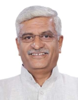

3જી નરેન્દ્ર મોદી મંત્રાલય

સમયગાળો:
૯ જૂન ૨૦૨૪ - ૧ જાન્યુઆરી ૨૦૨૫
નાયબ વડા પ્રધાનો:
રચના:
કેબિનેટ મંત્રી: ૩૦
રાજ્ય મંત્રી (સ્વતંત્ર હવાલો): ૫
રાજ્યમંત્રી: ૩૬
મુખ્ય કેબિનેટ મંત્રી
રાજનાથ સિંહ
સંરક્ષણ મંત્રાલય
અમિત શાહ
ગૃહ મંત્રાલય
નીતિન ગડકરી
માર્ગ પરિવહન અને ધોરીમાર્ગ મંત્રાલય
જગત પ્રકાશ નડ્ડા
આરોગ્ય અને પરિવાર કલ્યાણ મંત્રાલય
તમામ મંત્રીઓ
નરેન્દ્ર મોદી
અણુ ઊર્જા વિભાગ[પ્રધાન મંત્રી]અવકાશ વિભાગ[પ્રધાન મંત્રી]
કર્મચારી જાહેર ફરિયાદ અને પેન્શન મંત્રાલય[પ્રધાન મંત્રી]

રાજનાથ સિંહ
સંરક્ષણ મંત્રાલય[કેબિનેટ મંત્રી]
અમિત શાહ
સહકાર મંત્રાલય[કેબિનેટ મંત્રી]ગૃહ મંત્રાલય[કેબિનેટ મંત્રી]

નીતિન ગડકરી
માર્ગ પરિવહન અને ધોરીમાર્ગ મંત્રાલય[કેબિનેટ મંત્રી].jpg)
જગત પ્રકાશ નડ્ડા
રસાયણ અને ખાતર મંત્રાલય[કેબિનેટ મંત્રી]આરોગ્ય અને પરિવાર કલ્યાણ મંત્રાલય[કેબિનેટ મંત્રી]

શિવરાજ સિંહ ચૌહાણ
કૃષિ મંત્રાલય[કેબિનેટ મંત્રી]ગ્રામીણ વિકાસ મંત્રાલય[કેબિનેટ મંત્રી]
_(cropped).jpg)
નિર્મલા સીતારામન
કોર્પોરેટ બાબતોનું મંત્રાલય[કેબિનેટ મંત્રી]નાણા મંત્રાલય[કેબિનેટ મંત્રી]

સુબ્રહ્મણ્યમ જયશંકર
વિદેશ મંત્રાલય[કેબિનેટ મંત્રી]
મનોહર લાલ ખટ્ટર
આવાસ અને શહેરી ગરીબી નિવારણ મંત્રાલય[કેબિનેટ મંત્રી]પાવર મંત્રાલય[કેબિનેટ મંત્રી]

એચ. ડી.
ભારે ઉદ્યોગ મંત્રાલય[કેબિનેટ મંત્રી]સ્ટીલ મંત્રાલય[કેબિનેટ મંત્રી]
.jpg)
પિયુષ ગોયલ
વાણિજ્ય અને ઉદ્યોગ મંત્રાલય[કેબિનેટ મંત્રી]
ધર્મેન્દ્ર પ્રધાન
શિક્ષણ મંત્રાલય[કેબિનેટ મંત્રી]
જીતનરામ માંઝી
સૂક્ષ્મ લઘુ અને મધ્યમ ઉદ્યોગ મંત્રાલય[કેબિનેટ મંત્રી]
રાજીવ રંજન સિંહ
મત્સ્યોદ્યોગ, પશુપાલન અને ડેરી મંત્રાલય[કેબિનેટ મંત્રી]પંચાયતી રાજ મંત્રાલય[કેબિનેટ મંત્રી]

સર્બાનંદ સોનોવાલ
શિપિંગ મંત્રાલય[કેબિનેટ મંત્રી]
વિરેન્દ્રકુમાર ખટીક
સામાજિક ન્યાય અને અધિકારિતા મંત્રાલય[કેબિનેટ મંત્રી]
રામમોહન નાયડુ કિંજરાપુ
નાગરિક ઉડ્ડયન મંત્રાલય[કેબિનેટ મંત્રી]
પ્રહલાદ જોષી
ગ્રાહક બાબતો, ખાદ્ય અને જાહેર વિતરણ મંત્રાલય[કેબિનેટ મંત્રી]નવી અને નવીનીકરણીય ઉર્જા મંત્રાલય[કેબિનેટ મંત્રી]

જુઅલ ઓરમ
આદિજાતિ બાબતોનું મંત્રાલય[કેબિનેટ મંત્રી]ગિરિરાજ સિંહ
કાપડ મંત્રાલય[કેબિનેટ મંત્રી]
અશ્વિની વૈષ્ણવ
માહિતી ટેકનોલોજી મંત્રાલય[કેબિનેટ મંત્રી]રેલ્વે મંત્રાલય[કેબિનેટ મંત્રી]

જ્યોતિરાદિત્ય સિંધિયા
સંચાર મંત્રાલય[કેબિનેટ મંત્રી]પૂર્વોત્તર ક્ષેત્રના વિકાસ મંત્રાલય[કેબિનેટ મંત્રી]

ભૂપેન્દ્ર યાદવ
પર્યાવરણ અને વન મંત્રાલય[કેબિનેટ મંત્રી]
પ્રવાસન મંત્રાલય[કેબિનેટ મંત્રી]
ગજેન્દ્રસિંહ શેખાવત
સંસ્કૃતિ મંત્રાલય[કેબિનેટ મંત્રી]પ્રવાસન મંત્રાલય[કેબિનેટ મંત્રી]

અન્નપૂર્ણા દેવી યાદવ
મહિલા અને બાળ વિકાસ મંત્રાલય[કેબિનેટ મંત્રી]
કિરેન રિજિજુ
લઘુમતી બાબતોનું મંત્રાલય[કેબિનેટ મંત્રી]સંસદીય બાબતોનું મંત્રાલય[કેબિનેટ મંત્રી]
_(cropped).jpg)
હરદીપ સિંહ પુરી
પેટ્રોલિયમ અને કુદરતી ગેસ મંત્રાલય[કેબિનેટ મંત્રી]’,_in_New_Delhi.JPG)
એલ. મનસુખ માંડવિયા
શ્રમ મંત્રાલય[કેબિનેટ મંત્રી]યુવા બાબતો અને રમતગમત મંત્રાલય[કેબિનેટ મંત્રી]

જી. કિશન રેડ્ડી
કોલસા મંત્રાલય[કેબિનેટ મંત્રી]ખાણ મંત્રાલય[કેબિનેટ મંત્રી]

ચિરાગ પાસવાન
ખાદ્ય પ્રક્રિયા ઉદ્યોગ મંત્રાલય[કેબિનેટ મંત્રી]ચંદ્રકાંત રઘુનાથ પાટીલ
જલ શક્તિ મંત્રાલય[કેબિનેટ મંત્રી]
રાવ ઈન્દ્રજીત સિંહ
સંસ્કૃતિ મંત્રાલય[રાજ્યમંત્રી]આયોજન મંત્રાલય[રાજ્ય મંત્રી (સ્વતંત્ર હવાલો)]
આંકડા અને કાર્યક્રમ અમલીકરણ મંત્રાલય[રાજ્ય મંત્રી (સ્વતંત્ર હવાલો)]

જીતેન્દ્ર સિંહ
અણુ ઊર્જા વિભાગ[રાજ્યમંત્રી]અવકાશ વિભાગ[રાજ્યમંત્રી]
પૃથ્વી વિજ્ઞાન મંત્રાલય[રાજ્ય મંત્રી (સ્વતંત્ર હવાલો)]

અર્જુન રામ મેઘવાલ
કાયદા અને ન્યાય મંત્રાલય[રાજ્ય મંત્રી (સ્વતંત્ર હવાલો)]સંસદીય બાબતોનું મંત્રાલય[રાજ્યમંત્રી]

પ્રતાપરાવ ગણપતરાવ જાધવ
આયુર્વેદ યોગ અને નેચરોપેથી યુનાની સિદ્ધ અને હોમિયોપેથી મંત્રાલય[રાજ્ય મંત્રી (સ્વતંત્ર હવાલો)]
જયંત ચૌધરી
શિક્ષણ મંત્રાલય[રાજ્યમંત્રી]કૌશલ્ય વિકાસ અને સાહસિકતા મંત્રાલય[રાજ્ય મંત્રી (સ્વતંત્ર હવાલો)]

જિતિન પ્રસાદ
વાણિજ્ય અને ઉદ્યોગ મંત્રાલય[રાજ્યમંત્રી]માહિતી ટેકનોલોજી મંત્રાલય[રાજ્યમંત્રી]

શ્રીપદ યાસો નાઈક
નવી અને નવીનીકરણીય ઉર્જા મંત્રાલય[રાજ્યમંત્રી]પાવર મંત્રાલય[રાજ્યમંત્રી]

પંકજ ચૌધરી
નાણા મંત્રાલય[રાજ્યમંત્રી]
કૃષ્ણ પાલ
સહકાર મંત્રાલય[રાજ્યમંત્રી]
આઠવલે રામદાસ બંધુ
સામાજિક ન્યાય અને અધિકારિતા મંત્રાલય[રાજ્યમંત્રી]
રામનાથ ઠાકુર
કૃષિ મંત્રાલય[રાજ્યમંત્રી]
નિત્યાનંદ રાય
ગૃહ મંત્રાલય[રાજ્યમંત્રી]
અનુપ્રિયા પટેલ
રસાયણ અને ખાતર મંત્રાલય[રાજ્યમંત્રી]આરોગ્ય અને પરિવાર કલ્યાણ મંત્રાલય[રાજ્યમંત્રી]

વી.
જલ શક્તિ મંત્રાલય[રાજ્યમંત્રી]રેલ્વે મંત્રાલય[રાજ્યમંત્રી]

પેમ્માસાની ચંદ્ર શેખર
સંચાર મંત્રાલય[રાજ્યમંત્રી]ગ્રામીણ વિકાસ મંત્રાલય[રાજ્યમંત્રી]

એસ. પી. સિંહ બઘેલ
મત્સ્યોદ્યોગ, પશુપાલન અને ડેરી મંત્રાલય[રાજ્યમંત્રી]પંચાયતી રાજ મંત્રાલય[રાજ્યમંત્રી]

શોભા કરંડલાજે
શ્રમ મંત્રાલય[રાજ્યમંત્રી]સૂક્ષ્મ લઘુ અને મધ્યમ ઉદ્યોગ મંત્રાલય[રાજ્યમંત્રી]

કીર્તિ વર્ધન સિંહ
પર્યાવરણ અને વન મંત્રાલય[રાજ્યમંત્રી]વિદેશ મંત્રાલય[રાજ્યમંત્રી]

બી. એલ. વર્મા (ઉત્તર પ્રદેશના રાજકારણી)
ગ્રાહક બાબતો, ખાદ્ય અને જાહેર વિતરણ મંત્રાલય[રાજ્યમંત્રી]શાંતનુ ઠાકુર
શિપિંગ મંત્રાલય[રાજ્યમંત્રી]
સુરેશ ગોપી
પેટ્રોલિયમ અને કુદરતી ગેસ મંત્રાલય[રાજ્યમંત્રી]પ્રવાસન મંત્રાલય[રાજ્યમંત્રી]

એલ. મુરુગન
માહિતી અને પ્રસારણ મંત્રાલય[રાજ્યમંત્રી]સંસદીય બાબતોનું મંત્રાલય[રાજ્યમંત્રી]

અજય તમટા
માર્ગ પરિવહન અને ધોરીમાર્ગ મંત્રાલય[રાજ્યમંત્રી]
બંડી સંજય કુમાર
ગૃહ મંત્રાલય[રાજ્યમંત્રી]
કમલેશ પાસવાન
ગ્રામીણ વિકાસ મંત્રાલય[રાજ્યમંત્રી]
ભગીરથ ચૌધરી
કૃષિ મંત્રાલય[રાજ્યમંત્રી]
સતીશ ચંદ્ર દુબે
કોલસા મંત્રાલય[રાજ્યમંત્રી]ખાણ મંત્રાલય[રાજ્યમંત્રી]

સંજય સિંહ
સંરક્ષણ મંત્રાલય[રાજ્યમંત્રી]
રવનીત સિંહ
ખાદ્ય પ્રક્રિયા ઉદ્યોગ મંત્રાલય[રાજ્યમંત્રી]રેલ્વે મંત્રાલય[રાજ્યમંત્રી]

દુર્ગા દાસ ઉઇકે
આદિજાતિ બાબતોનું મંત્રાલય[રાજ્યમંત્રી]
રક્ષા ખડસે
યુવા બાબતો અને રમતગમત મંત્રાલય[રાજ્યમંત્રી]
સુકાંત મજમુદાર
પૂર્વોત્તર ક્ષેત્રના વિકાસ મંત્રાલય[રાજ્યમંત્રી]શિક્ષણ મંત્રાલય[રાજ્યમંત્રી]

સાવિત્રી ઠાકુર
મહિલા અને બાળ વિકાસ મંત્રાલય[રાજ્યમંત્રી]
તોખાન સાહુ
આવાસ અને શહેરી ગરીબી નિવારણ મંત્રાલય[રાજ્યમંત્રી]
રાજ ભૂષણ ચૌધરી
જલ શક્તિ મંત્રાલય[રાજ્યમંત્રી]
ભૂપતિ રાજુ શ્રીનિવાસ વર્મા
ભારે ઉદ્યોગ મંત્રાલય[રાજ્યમંત્રી]સ્ટીલ મંત્રાલય[રાજ્યમંત્રી]

હર્ષ મલ્હોત્રા
કોર્પોરેટ બાબતોનું મંત્રાલય[રાજ્યમંત્રી]
નિમુબેન જયંતિભાઈ બાંભણીયા
ગ્રાહક બાબતો, ખાદ્ય અને જાહેર વિતરણ મંત્રાલય[રાજ્યમંત્રી]
મુરલીધર મોહોલ
નાગરિક ઉડ્ડયન મંત્રાલય[રાજ્યમંત્રી]સહકાર મંત્રાલય[રાજ્યમંત્રી]

જ્યોર્જ કુરિયન
મત્સ્યોદ્યોગ, પશુપાલન અને ડેરી મંત્રાલય[રાજ્યમંત્રી]લઘુમતી બાબતોનું મંત્રાલય[રાજ્યમંત્રી]

પવિત્રા માર્ગેરિટા
વિદેશ મંત્રાલય[રાજ્યમંત્રી]કાપડ મંત્રાલય[રાજ્યમંત્રી]